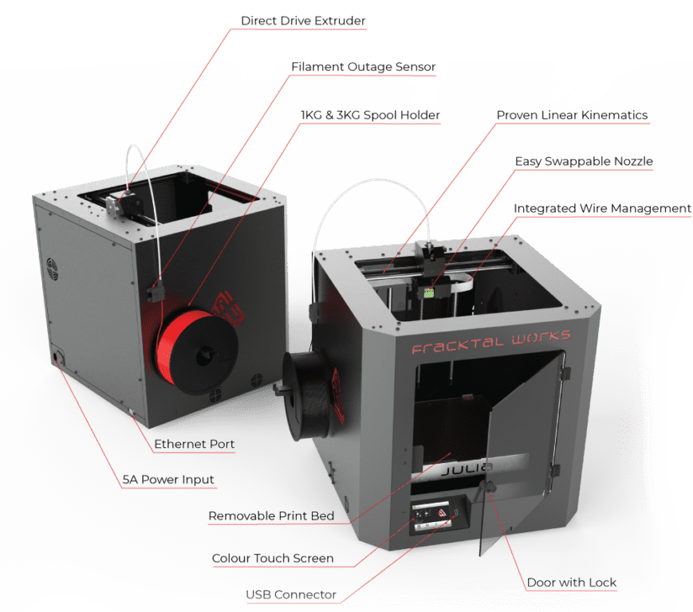
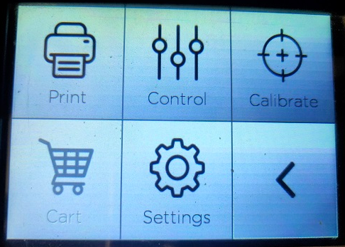
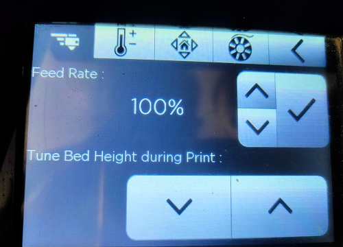
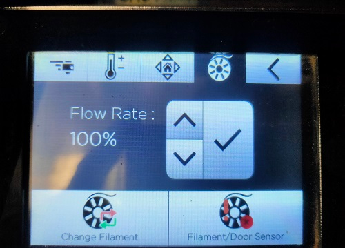
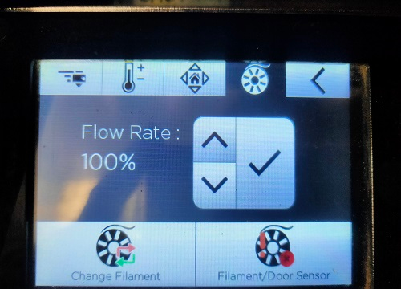
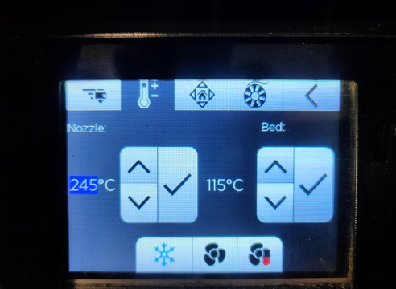

Assignment Info
- Title: 3D Printing
- Module no.: 04
Module 04: 3D Printing
Introduction to 3D Printing:
3D printing, also known as additive manufacturing, is a groundbreaking technology that has revolutionized the way we create three-dimensional objects. Unlike traditional subtractive manufacturing methods, which involve removing material from a solid block to create an object, 3D printing builds objects layer by layer from a digital model. This approach offers numerous advantages, including greater design freedom, reduced waste, and the ability to create complex geometries that would be challenging or impossible to achieve with traditional methods.
The applications of 3D printing span across a wide range of industries, including manufacturing, healthcare, aerospace, and education. In the manufacturing sector, 3D printing is used for rapid prototyping, allowing companies to quickly and cost-effectively test new product designs before full-scale production. In healthcare, 3D printing is used to create customized medical implants, prosthetics, and even organs, revolutionizing patient care. In aerospace, 3D printing is used to create lightweight and complex parts for aircraft and spacecraft, improving fuel efficiency and performance. In education, 3D printing is used to teach students about design and manufacturing processes, providing hands-on learning experiences that are both engaging and educational. Overall, 3D printing has had a profound impact on various industries, offering new possibilities for design, manufacturing, and innovation. Its ability to create complex, customized, and functional objects has opened up a world of possibilities, pushing the boundaries of what is possible in manufacturing and design. As 3D printing technology continues to evolve, we can expect to see even more exciting applications and innovations in the future.
Exporting and Preparing Models for Printing:
To prepare a 3D model for printing, it must first be converted into a format that is compatible with 3D printing software. The most common format used for this purpose is the .stl (stereolithography) file format, which represents the surface geometry of a 3D object using a series of interconnected triangles. This format is widely supported by 3D printing software and can accurately represent complex shapes and designs. Once the 3D model is in .stl format, it can be imported into slicing software, such as UltimakerCura, which is used to prepare the model for printing. The slicing software performs several crucial tasks, including generating a toolpath for the 3D printer to follow, slicing the model into individual layers, and calculating the necessary parameters for printing, such as print speed, layer height, and infill density.

One of the key functions of the slicing software is to generate a toolpath for the 3D printer. This toolpath defines the path that the printer's nozzle will follow as it deposits material to build up the object layer by layer. The slicing software also calculates the optimal settings for printing, such as the temperature of the extruder and the bed, the speed of the print head, and the amount of material to be extruded. These settings are crucial for ensuring that the print is successful and that the final object is of high quality. Overall, the process of preparing a 3D model for printing is a crucial step in the 3D printing workflow. By converting the model into a format that is compatible with 3D printing software and optimizing the settings for printing, users can ensure that their prints are accurate, high-quality, and successful.
Printing Process and Understanding UltimakerCura:
UltimakerCura stands out as one of the most widely used slicing software in the 3D printing community, renowned for its user-friendly interface and comprehensive set of features. This software plays a pivotal role in optimizing the printing process, offering a plethora of functions to fine-tune print settings according to the user's preferences and requirements. Users can easily adjust parameters such as layer height, print speed, and infill density, allowing for precise control over the printing process and resulting in high-quality prints.

One of the key features of UltimakerCura is its ability to provide a preview of the print, giving users a visual representation of how the final object will look. This feature is invaluable for identifying potential issues before printing and making any necessary adjustments. Additionally, UltimakerCura estimates print time and material usage, providing users with valuable information to plan their printing projects effectively. The software also offers support generation features, allowing users to add supports where necessary to ensure the stability of overhanging or complex parts during printing.
Overall, understanding how to use UltimakerCura is essential for anyone looking to achieve successful 3D prints. Its intuitive interface, coupled with its extensive range of features, makes it a valuable tool for maximizing the capabilities of your 3D printer and producing high-quality prints consistently. By mastering UltimakerCura, users can unlock the full potential of their 3D printer and explore the limitless possibilities of 3D printing technology.
Types of Supports in 3D Printing:
In the realm of 3D printing, supports play a crucial role in ensuring the successful printing of objects with overhangs or intricate details. These supports are auxiliary structures that are printed alongside the main object, providing stability and preventing deformities during the printing process. Various types of supports are available, each offering unique benefits and applications. Grid supports, for example, consist of a grid-like structure that provides robust support for overhangs and complex features. Line supports, on the other hand, are simpler structures that offer support in a more straightforward manner.

One type of support that has gained popularity in recent years is tree supports. These supports are designed to mimic the structure of a tree, with branches extending from a central trunk to support overhangs and complex geometries. Tree supports are known for their sustainability and efficiency, as they use less material compared to traditional supports. Additionally, tree supports are easier to remove after printing, reducing post-processing time and waste.
When choosing the right type of support for a 3D printing project, several factors should be considered, including the complexity of the object, the material being used, and the desired level of detail. By selecting the appropriate support structure, users can ensure that their prints are of high quality and require minimal cleanup. Overall, supports are a critical component of the 3D printing process, enabling the creation of intricate and complex objects with ease and precision.
In FABLAB we have Fracktal Works 3D Printer's extended version
The Fractal Works 3D printer represents a significant advancement in 3D printing technology, specifically tailored for use in advanced fabrication environments such as Fab Labs. This extended version of the standard Fractal Works printer is characterized by its enhanced features and capabilities, making it an ideal choice for complex and large-scale projects. One of the key highlights of the Fractal Works 3D printer is its exceptional reliability and precision. This precision is crucial in ensuring that intricate and detailed designs are accurately reproduced, meeting the high standards expected in professional and maker communities. The printer's ability to consistently deliver high-quality prints has contributed to its widespread popularity among professionals and enthusiasts alike.
In addition to its reliability and precision, the Fractal Works 3D printer offers a range of features that further enhance its functionality and usability. These features may include a larger build volume, allowing for the creation of larger objects or multiple smaller objects in a single print job. The extended version of the printer may also include upgraded components or enhanced software capabilities, further improving its overall performance and user experience. Overall, the Fractal Works 3D printer stands out as a versatile and reliable tool for advanced fabrication environments. Its combination of enhanced features, reliability, and precision make it a preferred choice for professionals and makers seeking to push the boundaries of 3D printing technology.
One of the key features of the Fractal Works 3D printer's extended version is its larger build volume, allowing users to create larger objects or multiple smaller objects in a single print job. This expanded capacity opens up new possibilities for fabrication and prototyping, enabling users to tackle more ambitious projects. Additionally, the extended version may include upgraded components or enhanced software capabilities, further improving the overall performance and usability of the printer.
Hands-On with the Fractal Works Extended Printer
Following the enlightening introductory session, our mentor guided my group to the 3D printer, offering us an up-close encounter with this remarkable piece of technology. As we observed the printer in action, its intricate components working harmoniously to craft three-dimensional objects layer by layer, we were captivated by the sheer ingenuity behind its operation. Our mentor took this opportunity to delve deeper into the fundamental concept of 3D printing, drawing a clear distinction between this innovative process and traditional manufacturing methods. He underscored the transformative advantages of 3D printing, including its unparalleled speed, unrivaled customization capabilities, and the ability to effortlessly create complex shapes that were once deemed unachievable. The experience of witnessing the 3D printer in operation was nothing short of mesmerizing, sparking a newfound appreciation for the endless possibilities that this technology presents. Each component of the printer seemed to play a crucial role in the intricate dance of creation, highlighting the meticulous planning and engineering that goes into every print. Our mentor's explanation illuminated the underlying principles of 3D printing, revealing the meticulous process of layering material to build up a tangible object from a digital design. This hands-on encounter not only deepened our understanding of 3D printing but also fueled our curiosity and excitement to explore its capabilities further.
 The mentor's exploration of the 3D printer's mechanics provided us with a comprehensive understanding of its intricate functions and their significance in the printing process. Central to this discussion was the printer's extruder, a vital component responsible for melting and depositing the printing material, typically plastic filament, layer by layer to construct the object. The extruder's precise control over the flow and deposition of the material is critical in achieving the desired shape and structural integrity of the final print. Furthermore, the mentor delved into the nuanced art of selecting the right print settings to achieve the desired outcome. Factors such as layer height, print speed, and infill density were discussed in detail, highlighting their influence on the strength, resolution, and overall quality of the printed object. Understanding how these settings interact and impact the printing process is crucial for achieving optimal results. Overall, the mentor's insights into the workings of the 3D printer provided us with a solid foundation in 3D printing technology, empowering us to embark on our own creative journeys with confidence and skill.
Another key element highlighted by the mentor was the printer's bed, the foundation upon which the object is constructed. Proper leveling of the bed is essential for ensuring uniform adhesion and layering of the material, ultimately impacting the overall quality of the print. The mentor emphasized the importance of meticulous calibration and maintenance of the printer to guarantee consistent and reliable performance. This includes regular checks and adjustments to various parameters such as temperature, speed, and extrusion rate to optimize print quality and prevent issues such as warping or misalignment.
 

One captivating feature that caught our attention was the 3D printer's compact yet powerful display, serving as a centralized control panel for seamlessly operating the machine. This intuitive display interface provided users with easy access to a plethora of settings and options, allowing for efficient navigation and management of print jobs. The mentor demonstrated how to utilize the display to its full potential, showcasing its functionality in selecting files for printing, adjusting print settings, and monitoring the progress of ongoing print jobs. Moreover, the display proved to be a valuable tool in troubleshooting common issues that may arise during the printing process. The mentor showcased how the display can be used to start, pause, or cancel print jobs, providing users with the flexibility to manage prints in real-time. Additionally, the display provided valuable insights into the printer's status, displaying crucial information such as the temperature of the extruder and bed, the progress of the print, and any error messages that may require attention.
The display's user-friendly interface and informative display made it an invaluable asset in optimizing the printing process. Its ability to provide real-time feedback and control options empowered users to make informed decisions and adjustments, ensuring smooth and successful prints. Overall, the 3D printer's display proved to be a testament to the advancements in user interface design, enhancing the overall user experience and making 3D printing more accessible and user-friendly.

Another useful feature of the 3D printer that the mentor highlighted was its ability to record timelapse videos of the printing process. This feature allows users to capture the entire printing process from start to finish, providing a visual record of how the object was created layer by layer. Timelapse videos can be useful for monitoring the print remotely, troubleshooting printing issues, or simply for sharing the process with others. The mentor explained how to set up and start a timelapse recording, as well as how to access and save the recorded video for future reference or sharing.